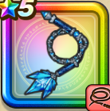

オーシャンウィップ
攻略班 7.5点 / マホトーンマヒャド魅惑の大水球※錬成で強化可能
くわしい特徴
【レベル別習得スキル】 Lv1【賢者】さいだいMP+5 Lv1こうげき魔力+5 Lv10マホトーン（消費MP：21）敵全体の呪文を封じる Lv15ヒャド属性じゅもんダメージ+10% Lv20マヒャド（消費MP：24）敵全体にヒャド属性呪文中ダメージを与える。 Lv30魅惑の大水球（消費MP：23）敵1体にヒャド属性の呪文特大ダメージを与える Lv35マヒャドのダメージ+5% Lv40植物系へのダメージ+5% Lv45さいだいMP+12 Lv50こうげき魔力+12錬成スキル改1ぱふぱふ（消費MP：15）敵1体を魅了する改2魅惑の大水球改（消費MP：33）敵1体にヒャド属性の特大呪文ダメージを与え、たまに魅了する改3物質系へのダメージ+20%改4錬成ぶき特別演出解放・メガモン討伐結果発表時に特別演出が追加・武器の見た目に特別なエフェクトが追加 【限界突破スキル】 1凸じゅもんダメージ+5% 2凸じゅもんダメージ+5% 3凸じゅもんダメージ+5% 4凸じゅもんダメージ+5%